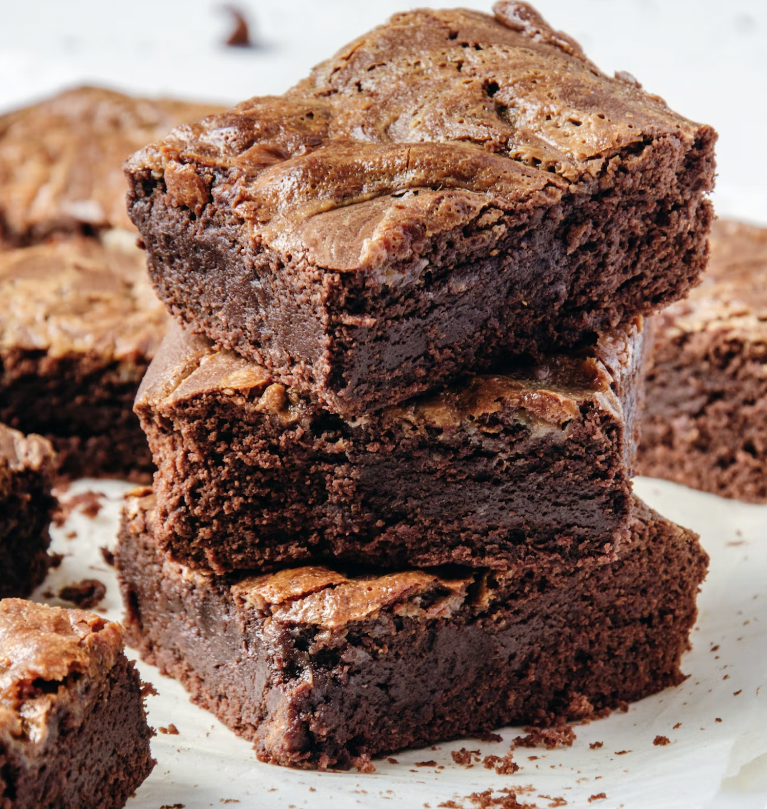

Chunky Cheesecake Brownies

Description
Text copied from: allrecipes. Wow! Melt-in-your-mouth brownies that are easy and elegant. Chocolate brownies marbled with cheesecake make fabulous squares! This is by far my most requested recipe.
Ingredients:
- 1 (8 ounce) package cream cheese, softened
- ¼ cup white sugar
- 1 egg
- 1 cup semisweet chocolate chips
- ¼ cup butter
- 1 cup semisweet chocolate chips
- ½ cup white sugar
- 2 eggs
- ⅔ cup all-purpose flour
- ½ teaspoon baking powder
- ¼ teaspoon salt
Steps:
- Let's Start - Preheat oven to 350 degrees F (175 degrees C). Grease a 9-inch square baking pan.
- Moving on - Combine cream cheese with 1/4 cup sugar and 1 egg in a mixing bowl; beat until smooth. Stir 1 cup chocolate chips into the cream cheese mixture. Set aside.
- Next - Fill a saucepan with water and bring to a boil. Turn the heat off, and set a heatproof mixing bowl over the water. In the mixing bowl, combine butter with the remaining cup of chocolate chips; stir until just melted and blended together. Stir in the remaining 1/2 cup sugar and 2 eggs, then sift together flour, baking powder, and salt; stir into chocolate until evenly blended.
- Getting on with the baking - Pour half of the batter into the prepared baking pan. Spread the cream cheese mixture over the chocolate layer. Top with remaining chocolate mixture (this doesn't need to completely cover the cream cheese layer). Using a knife, swirl the top chocolate layer into the cream cheese to make a marble pattern.
- Finally bake! - Bake in preheated oven at 350 degrees F (175 degrees C) for 25 to 30 minutes, or until top is crinkled and edges pull away from sides of the pan. Cool thoroughly. Cut into 12 to 16 squares. Store in the refrigerator or freeze.